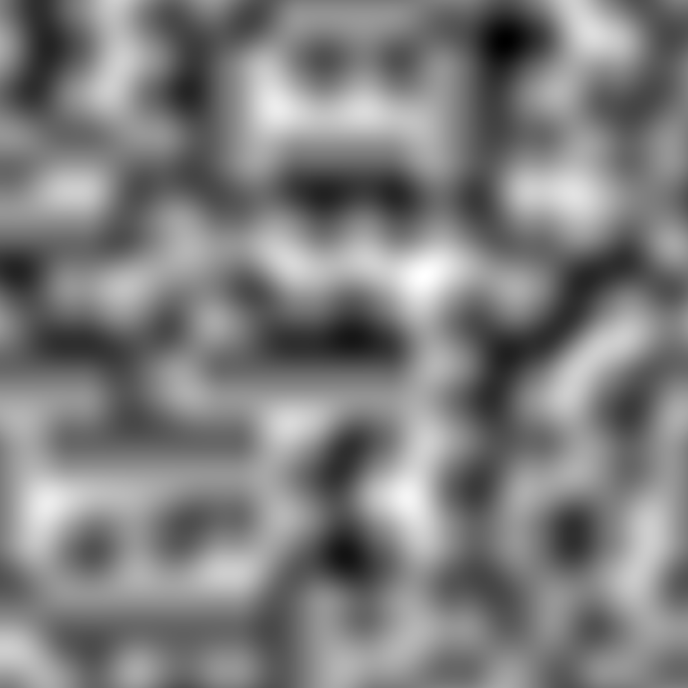

This function allows you to create fractals of a given noise or pattern generator by calculating it repeatedly at changing frequency and combining the results based on a fractal function.
fracture( noise, fractal, octaves, gain = ~./2, frequency = ~. * 2, seed = NULL, ..., fractal_args = list(), gain_init = 1, freq_init = 1 )
Arguments
| noise | The noise function to create a fractal from. Must have a
|
|---|---|
| fractal | The fractal function to combine the generated values with. Can be one of the provided ones or a self-made function. If created by hand it must have the following arguments:
And must return a numeric vector of the same length as |
| octaves | The number of generated values to combine |
| gain | The intensity of the generated values at each octave. The
interpretation of this is up to the fractal function. Usually the intensity
will gradually fall as the frequency increases. Can either be a vector of
values or a (lambda) function that returns a new value based on the prior,
e.g. |
| frequency | The frequency to use at each octave. Can either be a vector
of values or a function that returns a new value based on the prior. See
|
| seed | A seed for the noise generator. Will be expanded to the number of octaves so each gets a unique seed. |
| ... | arguments to pass on to |
| fractal_args | Additional arguments to |
| gain_init, freq_init | The gain and frequency for the first octave if
|
See also
Examples
grid <- long_grid(seq(1, 10, length.out = 1000), seq(1, 10, length.out = 1000)) # When noise is generated by it's own it doesn't have fractal properties grid$clean_perlin <- gen_perlin(grid$x, grid$y) plot(grid, clean_perlin)# Use fracture to apply a fractal algorithm to the noise grid$fractal_perlin <- fracture(gen_perlin, fbm, octaves = 8, x = grid$x, y = grid$y) plot(grid, fractal_perlin)